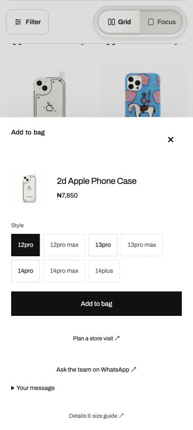

Your task, in view
CRUX website.
—
Reading verified checkpoints…
Verified progress
Goal:
Shopify optimization · parallel track
Separate track: 2 of 2 scoped steps complete. Details below distinguish configuration reads from saved and verified refinements. This adds no delivery-gate credit.
- Completed — Audit existing product copy and settings (08:42Z–08:54Z, took12 min; API refreshed17:55Z–17:59Z; Admin read22:13Z–22:16Z). Prior descriptions and categories are preserved; original SEO repair keeps its owner.
- Completed — Apply optional address line 2 and email marketing unchecked by default in every region (22:54Z–22:56Z, took2 min). Saved once, reloaded and verified both settings; regions dialog shows0 of237 selected. No theme publication.
Lands: completed22:56Z for these two scoped optimization steps. This is separate from the unfinished Shopify draft and its final ratings.
0 of 3 final 9.5 passes. Reviews have been completed; their last full scores are in review history.
What changed since last update
- Header #4863 completed both original code reviews and all hosted tests, then merged at 18:56 UTC. The unchanged approved stylesheet is now installed in the unpublished draft.
- Exact hosted bytes passed verification. All 694 other draft files, 550 live-theme files, 13 theme roles and six raw settings/layout bodies were preserved. The installed inventory is 173 files across 47 source manifests and 25 installations after the second full review.
- The 18:08 observation was missed while this chat was inactive; the completed jobs were reconciled at 19:19 UTC. Original finding and handoff wait ages were retained.
- No current Website device or browser grant is verified. Other lanes have had pressure 1 readings and expiring grants; those do not authorize this task's capture. The same acceptance owner receives the new source without a duplicate worker.
- Delivery remains 6/11, native checks 0/7 and final passes 0/3. Runtime privacy, retained coverage and the original final named-fix checks remain separate. The Shopify draft stays unpublished.
The five delivery gates still open
These are the original remaining checklist items. Repairs and tests advance the work; each gate closes when its full delivery evidence is verified.
- 5. Buyer trust and WhatsApp reviews
Blocker: Consent and the connected customer-care journey still lack final acceptance. Aftercare’s acceptance checks are merged and qualified, but actual connected proof remains unverified.
Next: The original acceptance owner consumes the merged checks; the service owner proves consent and the connected journey on the qualified source.
- 6. Assistant privacy facts
Blocker: Provider and source questions are closed. The completed custodian read is partial: actual CRUX policy, off-host retention, remaining operational holders and mounted deletion/export acceptance remain open. Host log custody is accepted, operational cleanup source is installed and the phone-path masking repair is deployed with exact installed-source parity. Runtime masking and scheduled cleanup outcomes remain unverified. No conflicting promise was found in the compared notice/source. Features stay off.
Next: Original owners resolve these specific facts and qualified TEST evidence under the same notice card; no repeated provider question or duplicate repair.
- 8. Final three-model ratings
Blocker: 0 of 3 final 9.5 passes. The three original readers still need their named repairs and required rendered, measured, native and connected evidence.
Next: Finish those prerequisites and return the same finished source to Fable 5.1, Astra 6 and Opus 5.5 for their original final named-fix checks.
- 10. Completed Shopify draft and handover
Blocker: Installed BIG BAG/options and settled bag passed bounded desktop checks. The single installed-source arrival capture found one 2-pixel pin shift; other header checks passed. Connected journeys, native/performance proof and final ratings remain open.
Next: Complete changed-source rendering, connected journey, native, timing and original final-reader evidence on the now-installed header source before draft handover.
- 11. BIG BAG page and navigation
Blocker: The title repair is reviewed, merged, installed and passes measured fit at 320, 380 and 1280 pixels. Native, connected and final-reader acceptance remain open.
Next: Preserve the completed title screenshots and original visibility findings, then finish native and original reader qualification on the installed source.
Explore four systems, original-owner decisions and what is actually verified. →
Supporting work
Capability progress
Explore capability groups
| ID | Capability | Source | Tests | Review | Deployed | Accepted | Next |
|---|
Current draft check · 380px · 21 October
Unpublished draft, 21 October 2026, 05:44–05:54Z, desktop at 380 CSS px. Selecting available 12pro enabled Add to bag and Plan a store visit. No item was added and no store/customer message was sent. This image is scoped desktop evidence, not native, 200% text, timing or final acceptance.


Watch the pet move · verified browser evidence
Historical evidence from 20 October at 09:26:45Z on the installed unpublished draft: automatic movement and all four controls, head tilt, guide open/close and 20 seconds of reduced-motion stillness. Settled 380px/430px views fit at normal text size. These clips do not verify the later pet-only live installation. Touch dispatch was unsupported; no native, 200% text, performance or final-rating credit.

Responsive browser evidence. Touch dispatch was unsupported. Native iPhone, 200% text, performance measurements and final ratings remain separate.
Plan and timing
- Complete the exact-source title measurement and visible-pixel check (20:32Z–20:38Z, took 6 min; title clearance passes, one retained button-visibility finding).
- Validate the embedding advisory against original source and publish it (20:50Z–21:04Z, took 14 min; 19 claims checked and five hosted files verified).
- Recover the original coordinator handoff and browser allocation (22:04Z–22:09Z, took 5 min; original writer queued, browser granted).
- Check the retained account, order and populated bag (22:10Z–22:16Z, took 6 min; both Back journeys returned, plus and quantity controls measured 44 × 44px; no cart changes).
- Reconcile the latest installed-source receipts with the original acceptance owner (22:39Z–22:47Z, took 8 min; 173 tracked assets, 40 source manifests; no native credit).
- Apply and verify the two approved checkout settings (22:54Z–22:56Z, took 2 min; Optional address line 2 and no email preselection in any of 237 regions; verified after reload).
- Publish the verified settings and source update on the task site (22:58Z–23:00Z, took 2 min; all five hosted files match the published source).
- Complete the original title analysis on the remote worker (23:23Z–23:33Z, took 10 min; exact inputs staged; unchanged source and retained visibility result explained).
- Consume the title result and deliver its prepared review handoff (23:33Z–23:35Z, took 2 min; original keeper retains publication).
- Publish the title repair and verify its review-entry state (23:35Z–23:45Z, took 10 min; PR #4780 opened, merge conflict returned to its original publisher).
- Resolve the title integration conflict and verify its unchanged scope (23:45Z–23:55Z, took 10 min; original three-file repair preserved).
- Complete merged-title verification and advance it to review (23:54Z–00:02Z, took 8 min; 20 tests and 23 safeguards passed; original publisher pushed once).
- Consume the hosted checks and original first review (00:01Z–00:30Z, took 29 min; all five test groups and safeguards passed; review found one short-phone overlap).
- Complete the original shorter-screen correction and qualify its returned evidence (00:30Z-00:46Z, took 16 min; one push, source checked, full hosted proof still required).
- Reconcile the SEO merge and retire its stale staged status (00:38Z-00:54Z, took 16 min; original integration completed, fresh checks running).
- Complete the corrected title remote proof (00:51Z-00:57Z, took 6 min; 20 tests and 24 selected regression checks passed).
- Consume the original second review (00:50Z–01:04Z, took 14 min; one remaining invitation overlap returned to the original repair route).
- Complete the final named title correction and its remote proof (01:12Z–01:37Z, took 25 min; 20 tests and 26 regression checks passed).
- Complete the original final named-fix code review (01:32Z–01:35Z, took 3 min; approved; rendered design acceptance remains separate).
- Recover the missing header source on the remote worker (01:40Z–01:44Z, took 4 min; exact bundle verified and delivered to the original owner).
- Resolve the shared CI merge hold through its original repair owner (01:51Z–04:32Z, took 161 min; the repair merged and the chair released held publications).
- Complete the title checks and protected merge (06:56Z–07:25Z, took 29 min; all five test groups passed, final named-fix review approved and merge verified).
- Install and preserve the exact merged title CSS in the unpublished draft (07:32Z–07:46Z, took 14 min; pre-send read failure reconciled without effect, one recovery batch installed, exact bytes and full preservation verified).
- Route the recurring Money test to its original owner with precise source evidence (05:52Z–06:09Z, took 17 min; chair assigned the diagnosis; request-arrival race remains a hypothesis).
- Merge current main through the original header writer (01:53Z-01:59Z, took 6 min; clean four-file repair retained).
- Verify the merged header on the remote worker (02:03Z-02:09Z, took 6 min; 45 tests passed, 18 skipped, all 23 regression checks passed).
- Complete the original header publication (22 October 12:42Z–23 October 05:27Z; original wait resolved after the shared CI repair).
- Complete the header’s first review and hosted checks (05:32Z–06:19Z, took 47 min; first review approved, all five test groups and safeguards passed).
- Complete the header’s protected merge (06:19Z–06:20Z, took 1 min; merge verified at 06:31Z and merged CSS matches the approved source).
- Install and verify the exact merged header CSS in the unpublished draft (06:32Z–06:43Z, took 11 min; one stylesheet, exact hosted bytes and full preservation checks).
- Recover browser control and check held-press feedback plus installed header rendering (06:50Z–06:58Z, took 8 min; plus feedback passed without changing the bag; settled 380/1280 views fit).
- Interpret first-arrival recordings and return the desktop navigation wrap to its original writer (07:01Z–07:06Z, took 5 min; focused follow-up, no new score).
- Complete the header first-arrival remote proof (07:49Z–08:39Z, took 50 min including the remote queue; 166 tests and all 24 mutation checks passed).
- Publish the exact header follow-up through its original owner (08:39Z–08:46Z, took 7 min; draft PR #4799 and holder verified).
- Complete header follow-up checks and protected merge (09:12Z–10:22Z, took 70 min; all five hosted groups passed; exact approved source merged).
- Install and preserve the merged header follow-up in the unpublished draft (12:12Z–12:24Z, took 12 min; one stylesheet installed, exact bytes and preservation verified, source record adopted).
- Publish and verify the changed browser evidence on the task site (07:07Z–07:09Z, took 2 min; all five hosted files match).
- Reconcile the final review evidence index (05:36Z–05:37Z, took 1 min; eight source receipts verified, historical bindings preserved).
- Check the installed Big Bag title at 320, 380 and 1280 pixels (07:54Z–07:56Z, took 2 min; title text fits and no horizontal page overflow; screenshots and measurements saved).
- Prepare the original header arrival measurement (13:11Z–13:33Z, took 22 min; source reproduction and an unlisted existing script required preparation; no browser visit yet).
- Qualify and stage the header source inputs (13:34Z–13:39Z, took 5 min; all 100 served-byte reproductions matched and the complete 174-key measurement binding is staged).
- Rebind and qualify the original header helper (13:59Z–14:15Z, took 16 min including packet transfer; 81 offline checks and all 142 returned file hashes passed).
- Complete the single remote header arrival check (14:17Z–14:42Z, took 25 min including worker wait; exact source passed, vertical alignment and overflow passed, horizontal geometry failed).
- Qualify the returned header font candidate against the original requirement (15:33Z–16:03Z, took 30 min; preload mitigation still permits cold-font movement; same-writer completion placed with the existing capture inputs).
- Complete stable header geometry source through the original writer (19:42Z–20:01Z, took 19 min; fixed outer widths replace preload; source returned without a rendered claim).
- Verify the returned header with real template dependencies and its regression checks (20:04Z–20:21Z, took 17 min; six files, 153 passes, 166 explicit skips and all 34 mutation checks passed).
- Complete the header source read and publish its exact tested head for review (20:23Z–20:33Z, took 10 min; PR #4818 Ready, original writer custody retained, current-main overlap absent).
- Complete the header’s original first independent review (21:01Z–21:07Z, took 6 min; exact source approved without findings; source review only).
- Complete header hosted recovery and protected merge (23 October 21:57Z–22:41Z, took 44 min; all five groups and test gate passed on unchanged approved source; merge verified).
- Install and preserve the merged header in the unpublished draft (24 October 06:02Z–06:05Z, took 3 min; exact stylesheet readback, 694 other draft assets, 550 live-theme assets, all 13 roles and six settings/layout bodies preserved).
- Complete the remaining pin animation correction through its original writer (20:16Z–20:27Z, took 11 min; inner icon target preserves timing and leaves the outer host untouched).
- Verify the pin correction with real template dependencies and all affected safeguards (20:30Z–20:54Z, took 24 min including worker wait; four files, 63 passes, 59 explicit skips and all ten mutation checks passed).
- Publish the original pin repair and establish its review holder (21:02Z–21:05Z, took 3 min; unchanged tested source, current-main reconciliation, PR #4820 Ready with its original writer).
- Complete the pin repair’s original first independent review (21:10Z–21:30Z, took 20 min including its queue; exact source approved without findings; rendered geometry still required).
- Complete the original pin test recovery and protected merge (23 October 23:19Z–23:38Z, took 19 min; original owner authorized one full workflow recovery; all five groups and aggregate passed on unchanged approved source; failures did not recur).
- Install and preserve the exact pin script in the unpublished draft (24 October 06:05Z–06:09Z, took 4 min; fresh header-installed baseline, exact script readback and full preservation verified).
- Measure remaining desktop Options timing and safe held controls (same instrumentation refusal at 07:55Z; browser released at 07:56Z; supported recovery and fresh grant required; est. 10 min after recovery).
- Complete the queued iPhone check after qualified allocation (waiting since 16 October 20:16Z; updated source packet is adopted by the same helper; no device action; latest19:13Z Hands evidence includes pressure1pairs forotherlanes, but no currentWebsitegrant; original Website boundary and scoped-policy requests retain their first waits; est. 13 min after actual grant).
- Complete the SEO repair’s reviews and merge (00:38Z–02:15Z, took 97 min; merged with required checks).
- Complete the connected repair reviews and merges (09:12Z–11:24Z, took 132 min; both original changes merged after required checks and reviews).
- Complete original TEST tracking-link remote proof (12:16Z–12:30Z, took 14 min; 849 tests passed, one skipped and all 127 mutation checks passed).
- Complete the original tracking-link source read, publication and size admission (12:31Z–12:36Z, took 5 min; Draft #4810 admitted as one 616-line change).
- Complete the original tracking-link evidence-wording correction (12:51Z–13:12Z, took 21 min; named change returned and pushed once, source and causal checks passed).
- Complete the corrected tracking-link proof and size admission (13:15Z–13:29Z, took 14 min; 849 tests passed, one skipped, all 128 mutation checks passed; chair admitted the 634-line source).
- Advance tracking-link source to Ready and complete its first independent review (13:31Z–13:43Z, took 12 min; first review approved the exact source).
- Complete tracking-link hosted checks (13:31Z–14:30Z, took 59 min including the hosted queue; all five test groups, test gate and mutation checks passed).
- Complete the original second tracking-link review and protected merge (14:22Z–14:31Z, took 9 min; second review approved, exact source merged).
- Consume the original tracking-link deployment receipt (14:32Z–14:43Z, took 11 min; deployed source carries the approved merge, health 200).
- Complete tracking-link authenticated acceptance (selector release reported by its original owner at 21:59Z; qualified TEST connection, staff context and original acceptance adoption still required; duration unknown).
- Build the current-item and store enquiry integration (13:11Z–13:27Z, took 16 min; source returned; release checks and one scope correction remain).
- Remove recording from the new Stores enquiry (13:56Z–14:11Z, took 15 min including returned-source inspection; initial and refreshed links corrected, existing receipt positive control retained).
- Complete authoritative Stores dependency and regression proof (14:14Z–14:42Z, took 28 min including worker wait; 13 files, 164 tests, 10 subtests and all 68 mutation checks passed; 166 matrix skips disclosed).
- Consume the store enquiry’s first independent review (15:14Z–15:26Z, took 12 min including owner readback; exact source approved with no blocking finding).
- Complete store enquiry hosted tests and aggregate (14:49Z–16:04Z, took 75 min including queue; all five groups and the aggregate passed).
- Complete store enquiry protected merge and exact source qualification (16:04Z–16:22Z, took 18 min; canonical standard policy requires its authenticated first approval; all five reviewed files match the merge).
- Install and preserve the two approved store enquiry assets in the unpublished draft (16:22Z–16:25Z, took 3 min; exact hosted bodies, all 693 other draft files, 550 live-theme files and settings/roles preserved).
- Complete Stores, header and pin rendered acceptance on the installed source (waiting since 23 October 13:39Z; browser access recovered, source frozen after both installations; currentWebsiteallocation is missing; otherlanegrants do not transfer; est. 10 min after grant).
- Consume the original privacy runtime fact read (15:14Z–15:32Z, took 18 min including readback; no scheduled purge established on the checked host, off-host policy and actual custodians still required).
- Complete installed-source, iPhone, connected and performance evidence (modal-close/reopen disposition and the 21.56-second public journey are retained as complete; authenticated populated-bag/account/native whole-journey evidence and resource prerequisites remain; duration unknown).
- Return the finished assembly for the three original final named-fix checks and draft handover (requires rendered, native, connected and performance evidence plus the existing new-feature coverage disposition; duration unknown).
- Update the task site with the pin proof and two active review lanes (21:05Z–21:07Z, took 2 min; five public files match the published source).
- Publish the installed header, connected merges and verified advisory contribution (12:24Z–12:29Z, took 5 min; exact Pages build and five hosted files verified).
- Complete the current-source remote header helper (24 October 06:25Z–06:37Z, took 12 min; 95 offline checks passed, all 19 fault injections detected; 154 artifact hashes verified; the capture was then staged and completed once at 09:15Z).
- Save the existing Website flight handoff with source, original running job and remaining evidence (06:29Z–06:32Z, took 3 min; local handoff delivered, Hands/cloud adoption still pending).
- Reconcile the retained handoff and staged capture (24 October 07:59Z–08:04Z, took 5 min; original helper is complete, no new capture exists; one executable continuation delivered to its original owner).
- Complete the single current-source remote arrival capture (24 October 09:15Z–09:16Z, took 1 min; source gate passed; C1, C3 and C4 passed; C2 found a 2-pixel pin shift; the attempt is spent and will not be repeated).
- Complete the original privacy custodian read and notice comparison (24 October 08:00Z–08:27Z, took 27 min including adoption; report ended 08:10Z; changed 08:23Z evidence confirms host custody and a cleanup repair need; no conflicting notice promise, off-host facts and mounted acceptance remain open).
- Complete the privacy repairs under their original custody (cleanup installed; phone repair merged and deployed, four installed files verified17:41Z; runtime privacy acceptance remains, duration unknown).
- Reconcile the spent arrival result and original repair destination (13:16Z–13:21Z, took 5 min; all four criteria read, source hashes verified and no matching active repair found).
- Route the measured repair once and bind changed privacy evidence (13:21Z–13:24Z, took 3 min; one original-writer request and one distinct-head custody reconciliation saved; delivery and execution remain separate).
- Update the original public report and verify its hosted bytes (13:24Z–13:26Z, took 2 min; matching build completed and five hosted files match; rendered inspection remains separate).
- Receive the original header repair for the same pin finding (16:20Z–16:46Z, took 26 min to verified receipt; code returned, full remote validation and rendered acceptance remain).
- Consume the published cleanup source merge and preserve the separate returned candidate (14:43Z–14:49Z, took 6 min; merged at 14:05Z, no deployment or retention credit).
- Consume original cleanup installation and corrected phone transfer receipts (14:53Z–14:56Z, took 3 min; exact installed source and original phone adoption verified, runtime acceptance remains open).
- Complete original phone code release (16:38Z–17:19Z, took 41 min; original approval and all hosted gates passed, exact source merged; verified17:27Z).
- Consume original phone deployment and installed-source proof (17:41Z–17:44Z, took 3 min; existing17:22Z release reconciled and all four installed files match the candidate and merge).
- Complete original phone runtime privacy acceptance (original service owner acknowledged the deployed repair and routed a server-only synthetic masking check; result, retention and qualified TEST remain; duration unknown).
- Publish and verify the changed-facts report (14:51Z–14:56Z, took 5 min; five hosted files match after read-only SSL-timeout recovery; latest original-owner facts retained in the same report).
- Reconcile restored delivery and the original phone keeper correction (15:48Z–15:55Z, took 7 min; actual remote request restored and corrected manifest transfer verified).
- Publish and verify restored delivery and the phone keeper correction (15:55Z–15:57Z, took 2 min; matching build and five exact public files verified).
- Reconcile the new device readings and C7 in-place scope (15:57Z–15:59Z, took 2 min; no qualified device grant, source-only acknowledgement prepared).
- Complete original header keeper proof (16:52Z–17:13Z, took 21 min; exact source, 153 tests and all 29 mutation checks passed; terminal receipt consumed17:21Z).
- Advance the green header to its original release lane (17:32Z–17:38Z, took 6 min to verified Ready; current admission, gates and body checks passed).
- Complete the original header reviews, hosted tests and protected merge (17:35Z–18:56Z, took 81 min; original two reviews approved and all five hosted groups plus aggregate passed; observed 19:19Z after missed 18:08Z check).
- Install and preserve the merged header CSS in the unpublished draft (19:19Z–19:28Z, took 10 min; one stylesheet installed, exact bytes and all preservation checks passed, inventory 173/47/25 adopted).
- Publish the verified installation and hand the exact source to the original acceptance owner (started 19:28Z, est. 4 min; same task site and original source-only handoff).
- Consume original pin execution and phone keeper proof, then return the header cause (16:07Z–16:19Z, took 12 min; new terminal diagnosis required original-owner routing; corrected phone proof passed).
- Publish and verify the changed repair and phone-proof facts (16:19Z–16:22Z, took 3 min; same task site, exact build and five hosted files verified).
- Publish actual header start and the phone release prerequisites (16:27Z–16:37Z, took 10 min; original push completed once, matching build and five hosted files verified; network read recovery extended the 4-minute estimate).
- Publish returned header code and the phone Ready transition (16:48Z–16:52Z, took 4 min; matching build and all five hosted files verified, counts unchanged).
- Publish the header keeper start and phone code approval (16:58Z–17:07Z, took 9 min; matching build and all five files verified; build/readback extended the 4-minute estimate).
- Prepare the exact header source for its existing unpublished-install route (17:02Z–17:08Z, took 6 min; four exact source blobs and one stylesheet staged locally, no Shopify call or qualification).
- Publish the completed header proof and phone CI progress (17:24Z–17:26Z, took 2 min; matching build and five hosted files verified).
- Publish the phone merge and current header release facts (17:35Z–17:37Z, took 2 min; matching build and all five hosted files verified17:37:19Z).
- Publish the verified header Ready transition (17:40Z–17:41Z, took 1 min; matching build and five hosted files verified).
- Publish the verified phone deployment and remaining acceptance facts (17:45Z–17:46Z, took 1 min; matching build and five hosted files verified).
- Consume the header’s original first approval and hosted safeguards (17:53Z–17:54Z, took 1 min; exact source approved without findings, hosted mutation and guard checks passed).
- Publish the first approval and current hosted-test progress (17:55Z–17:57Z, took 2 min; matching build and five hosted files verified).
Lands: about 19:33Z for the verified task-site update and source handoff (4 min left; public build timing could move it). Final acceptance awaits the existing Website grant and named evidence prerequisites.
Last full reviews · Fable 9.05 · Opus 8.75 · Astra unqualified
Astra’s whole average is unknown. These are existing full-review results, not new scores. Only the original final named-fix checks remain.
Current work
Tap for detailPresenter: connecting · Worker: unknown
Published through GitHub Pages. This task site can be updated through the saved GitHub checkout independently of ChatGPT sign-in. The timestamp above is the last verified evidence; it is not a live activity indicator.